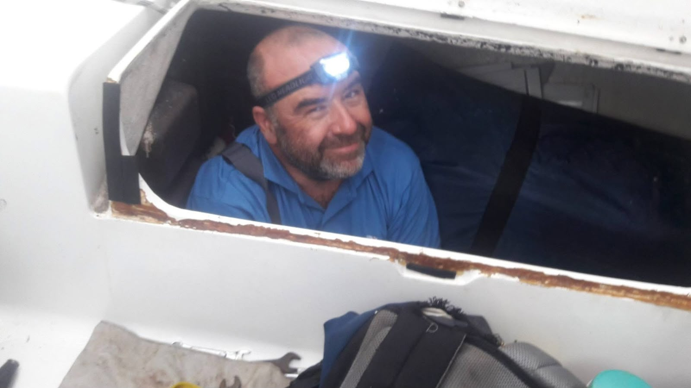

RELATO PERSONAL · REGRESO 2017
Todo empezó un fin de semana de noviembre de 2016, en Canning, durante uno de esos encuentros de la promoción en los que las conversaciones se estiran hasta que alguien mira el reloj. El Capi tiró la pregunta casi al pasar: “¿Alguien más para el regreso del Mambo a Buenos Aires?”. La regata Buenos Aires–Río de Janeiro ya estaba en el calendario y el velero, de unos cuarenta y cinco pies, necesitaba tripulación para volver. Levanté la mano.
Al principio el plan era regresar desde Río Grande hasta Buenos Aires. Después la ruta cambió: Florianópolis–Punta del Este, y desde allí el tramo final por el Río de la Plata. No tenía demasiadas certezas, pero sí ganas de volver a navegar con los compañeros. Acepté sin imaginar que el viaje iba a comenzar con una pequeña odisea terrestre.
La llegada
Viajé vía São Paulo. Al aterrizar descubrí que había olvidado cambiar dinero brasileño y que tampoco había habilitado la tarjeta Visa para usarla fuera del país. Terminé caminando desde el aeropuerto hasta el club náutico con las Crocs y el bolso, preguntando indicaciones y tratando de que el teléfono no se quedara sin batería. Cuando finalmente encontré al Mambo, sentí que la travesía ya había empezado.
En Florianópolis tuvimos que esperar unas cuarenta y ocho horas. La espera se convirtió en parte de la aventura: feijoada, caipirinhas, abacaxi, mango y pão de queijo, todo compartido con la tripulación y con la ansiedad de mirar el pronóstico cada pocas horas.
Zarpar y aprender a bordo
Cuando por fin soltamos amarras, el cuerpo tardó en entender el movimiento. Durante unas setenta y dos horas tuve un mareo persistente y llegué a ofrecerme para bajar en Río Grande. El Capi me respondió con una de esas bromas que sirven para medir el carácter de una tripulación: me insultó con cariño y me hizo saber que, si había subido, también iba a llegar. Así quedé oficialmente incorporado al equipo.
El Mambo navegaba bien, pero pronto supimos que una pata del motor se había roto. El desperfecto impedía cargar las baterías: quedaban las luces de navegación y poco más; la heladera tuvo que desconectarse. La navegación a vela pasó a ser también una administración cuidadosa de cada ampere.
En una guardia nocturna, una trasluchada accidental me dejó atrapado por el cuello durante unos segundos. Más tarde tomé el timón unos cuarenta minutos y se lo devolví al comandante. Aprendí observando: la genoa, el rumbo en orejas de burro, las conversaciones cortas y precisas, y esa forma de leer el agua que sólo aparece cuando el horizonte es la única referencia.
Punta del Este: el motor y la espera
Vimos una tortuga grande, entró la niebla y aparecieron seis buques enormes en la derrota. Al acercarnos a Punta del Este llegó el momento de entrar sin motor. Había que maniobrar con cuidado y, al mismo tiempo, hacer como si todo fuera normal para evitar una inspección de Prefectura antes de resolver la avería.

Después vino una ducha que parecía un premio, el aprovisionamiento y la espera del mecánico y de un nuevo tripulante. Para mi cumpleaños habían aparecido una botella de Pommery y una de whisky. Como no había hielo suficiente, llevé hielo desde el bar y enfrié la botella con agua del río. Mientras tanto, el Capi se metió en el compartimiento del motor con la linterna en la frente. Lo fotografié desde arriba: el barco entero era un pequeño taller improvisado.
La reparación terminó y el Mambo quedó amarrado cerca de un yate enorme. Salimos hacia Punta Ballena para revisar el casco, seguimos a Montevideo y encaramos el tramo final de la derrota por el Río de la Plata.
El regreso
Un Buquebus pasó muy cerca. También nos cruzamos con la Fragata Libertad: saludamos, nos devolvieron el saludo y una ola terminó mojando a buena parte de la tripulación. Al llegar a Buenos Aires aparecieron Migraciones, los abrazos y la sensación de que el viaje había sido más largo que las millas anotadas en la bitácora. Incluso los anteojos que creía perdidos volvieron a aparecer.
El sol también dejó su enseñanza. Confundí un hidratante con vitamina A con una crema protectora y terminé rojo como la camiseta de Independiente. En el mar, hasta una equivocación doméstica se convierte en una anécdota para la guardia siguiente.
Lo que queda
Después de aquel regreso entendí que las palabras siempre quedan un poco escuetas. Aprendí a no comer antes de zarpar, a leer las luces de la costa y a hablar durante horas con los amigos. Los problemas, cuando se comparten, se achican: al final quedan las personas y el agua.
Si el Capi volviera a preguntar “¿Alguien más para el regreso del Mambo?”, la respuesta sería la misma: sí.
XXXV Promoción · Relato personal del regreso del Mambo, 2017.